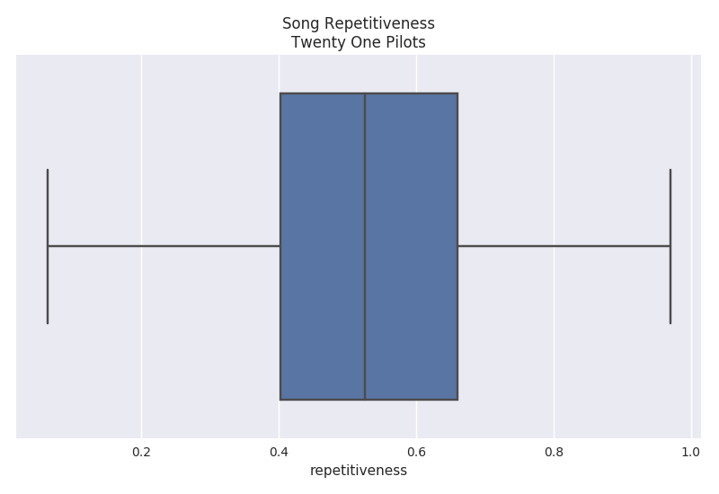
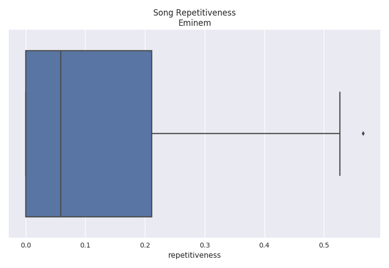
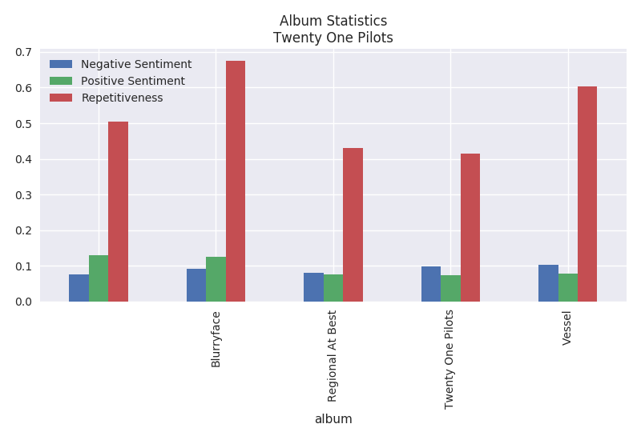
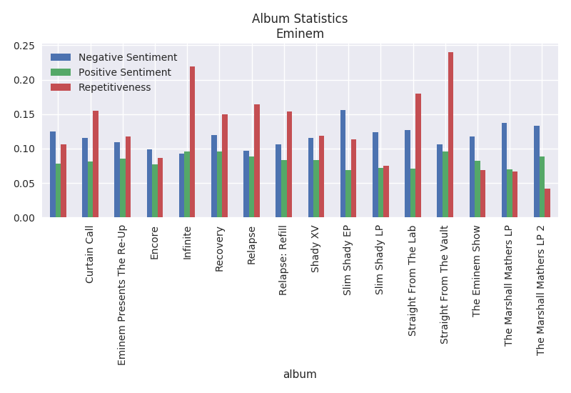

Lyric Analysis of an Artist
Introduction
This is a follow up post to the lyric analysis performed for the Billboard Hot 100 songs lyric analysis (referred to as - Billboard analysis). Within the Billboard analysis, I attempted to find trends within the lyrics that may influence why a particular song is popular. However, I did not find anything of interest. After no trends were found in the Billboard analysis, I wondered what I could find by analyzing every song performed by an artist. There is no particular trend of interest that I tried to find within an artist. This is purely an exploratory endeavor. All of the code associated with this pipeline can be found at the following Github repository.
Please take caution while reading this blog post. Some offensive language is used for analysis purposes.
Methods
In this section you will find the methods used to collect, cleanse, process and visualize the data. The image below represents the tasks associated with the entire data pipeline. It is a DAG (directed acyclic graph) of every task in the pipeline (created with Luigi).

Figure 1. Data pipeline
The data pipeline takes an artist and an output directory as input. It then goes through the process of extracting lyrics, cleaning the lyrics, processing the lyrics and finally generating some visualizations. These processes are explained in further detail below.
Data Collection
The data collection process first searches for the artist provided as input on the site AZLyrics.com. If an artist shows in the search results, the pipeline further scrapes the website to obtain all songs available. These tasks, ObtainArtistUrl, FetchArtistSongs and FetchLyrics, are all performed using the Requests and LXML libraries available in the Python language. Prior to web scraping, the pipeline creates a directory structure in the CreateDirectories task to store data, plots and reports in a tidy fashion within the specified output directory. Similar to the Billboard analysis, the swear word list from no-swearing.com is used to look for curse words throughout the text.
Data Cleansing
Preparation of the lyrics files consisted of removing unwanted text within the files. Many of the files contained labels in brackets to mark the chorus and other constructs of a song. These were removed from the files. Additionally, some lyrics files had a line that consisted of "Produced by…" which was removed. All data cleansing techniques used regular expressions in the Python programming language. Prior to this data cleansing step, raw data analysis was performed to determine what was causing "dirty results".
Text Processing and Visualization
The Python language and the following libraries were used to process and visualize the text: NLTK, Pandas, Matplotlib and Scikit-learn. NLTK is a natural language processing tool kit that provides convenience functions for common tasks such as tokenization and sentiment analysis. The Pandas library is a tool that provides common data analysis features. It enables you to easily perform aggregations, obtain descriptive statistics and plot data by wrapping convenience methods from other libraries. When Pandas didn't provide the exact plotting styles that I wanted out of the box, I used Matplotlib functionality to add styling to the plots. Scikit-learn was used to extract TF-IDFs (term frequency–inverse document frequency) and to perform topic modeling. TF-IDF is essentially a statistical measure of how important a word is within a given document. Topic modeling is a method that tries to find semantic meanings within a set of given text. In this analysis we use two different topic modeling algorithms; LDA and NMF.
Analysis
In this section we look at the output of the data pipeline for the artists Twenty One Pilots and Eminem. These two artists were chosen to illustrate potential insights that can be gained from artists. Additionally, these two artists come from two different genres; pop and rap.
Many of these techniques have already been explained in the Billboard analysis and are left out for brevity. I encourage you to read that blog post to learn more about the techniques.
Word Frequency
The word frequency represents the most common words found throughout all of the lyrics. It is normalized by the number of words in each document and the total number of songs observed. Comparing the artists below, we can see that Eminem has a tendency to swear a lot while Twenty One Pilots does not.


Swear Word Frequency
The swear word frequency is a measure of the number of curse words found throughout the lyrics. It is similar to the word frequency with the exception of curse words being targeted. The plots below only show the top 5 curse words found throughout the lyrics. It is pretty clear that Eminem curses quite a bit in his songs. The F-word shows up around 1.4% of the time. However, Twenty One Pilots only appears to curse very minimally with roughly 0.032% of the word "muff".
While we are only looking at the frequency of individual swear words, one might be interested in an overall frequency. For the purposes of this analysis it has been left out, but it could easily be calculated.


Repetitiveness
The repetitiveness is a measure of how many repetitions a particular phrase occurs. A threshold of 2 occurrences must be met in order for it to be considered repetitive. The actual calculation can be read within the Billboard analysis. The plots below show that Twenty One Pilots has a very high average repetition rate of 52% while Eminem has a much lower average rate of 7%.

Sentiment
The sentiment algorithm used is Vader within the NLTK library. It is a rule based algorithm trained from Twitter data. The Twenty One Pilots plot shows that their songs consist of both positive and negative sentiments while Eminem's lyrics have a higher negative sentiment.


Song Statistics
The song statistics simply plots the repetitiveness, positive sentiment and negative sentiment per song.


Album Statistics
The album statistics plots the repetitiveness, positive sentiment and negative sentiment per song. It is interesting that Twenty One Pilots highest repetitive album is Blurryface at a whopping 68%. The most repetitive album from Eminem is Straight From The Vault at around 23%.

Topic Modeling
The topic models shown below (one topic per line) is not very human friendly, however it makes sense to the computer. You can decipher a little bit of information from reading the topics. To build these topic models I used Sklearn. It extracted Ngrams from 1 to 2 N using the TfidfVectorizer within Sklearn and was fed into the algorithms. Essentially the vectorizer provides you with a list of features (Ngrams) and their inverse document frequency.
You can see that LDA and NMF give different results. LDA is typically used in documents where there are semantic units within the text while NMF is used for non-word based documents such as images.
LDA
Twenty One Pilots Topics
na na na ll tell reign
da hey hey hey trying trying trying
bah re broken bah bah broken doo
fall don heart won watch
save re alive stay alive eh eh
Eminem Topics
don cause shit fuck re
daddy phenomenal wanna love alright am phenomenal
paul rape don fuckin kidding ummm listened dead gay
yo requested intent checking week sayin called ok retilin goes
iâ canâ fucking kidding whatâ ish
NMF
Twenty One Pilots Topics
tell ll tell plans ll tell plans
na na na hello hello hello silent trees
hey hey hey trying trying trying trying sleep
sit sit silence silence car radio sit
play pretend pretend wish stressed re stressed
Eminem Topics
don cause shit fuck re
name name name huh hi yeah yeah
paul ummm listened paul ummm incest incest rape
woah alright drug woah woah steve
daddy mommy rejoice carry don voice looking
Conclusion
Building this data pipeline has proved to provide me with useful information about a particular artist without actually listening to any of their songs. One could use some of these techniques to identify music suited for a particular age or culture. For example, you may not want your kid to listen to songs with a high rate of swearing or negativity. Creating this type of intuition about a particular artist may enable individuals to quickly compare several artists at once with some adjustments to the pipeline. Some unsupervised clustering could be used in conjunction with the topic models to find similar artists based on lyrics.